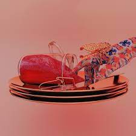
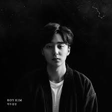

목차
1. 자기소개
2. 취미
3. 포부
자기소개
안녕하세요. 저는 송재준입니다. 울산 토박이고, 고래는 저도 안 먹어봤습니다. 언양 사는데 언양 불고기 싫어합니다.원래 다른 대학교에서 생활하다가 이번에 다시 원서를 넣어 유니스트에 오게 되었습니다.
신입생들보다 나이는 많지만 신입생으로 봐주시면 좋겠습니다. 감사합니다.

취미
음악듣기
딱히 좋아하는 장르가 있기보다는 여러 장르 음악을 많이 듣습니다.요새 즐겨듣는 가수는 선우정아, dpr live, dpr ian입니다.
제가 추천할 만한 노래는 dpr live의

jam & butterfly
입니다.
기타
잘 치지지는 못하고, 유튜브로 독학했습니다요새는 기타를 잘 안쳐서 할 수 있는 곡이 거의 없지만. 제가 자신있는 곡은 장범준의
흔들리는 꽃들 속에서 네 샴푸 향이 느껴진 거야
입니다.
혼코노
이것도 잘 부르지는 못하지만, 코인 노래방 가는 거 좋아합니다.UNIST오고 1달동안 한 5만원 정도 썼습니다.
그래서 홈페이지 다 만들고 또 갈 예정입니다. 노래방 가고 싶네요.
저의 노래방 애창곡은 로이킴의

북두칠성
입니다.
포부
여러분들과 프로젝트를 잘 마치고, 좋은 인연 만들었으면 좋겠습니다.
잘 부탁드립니다!!